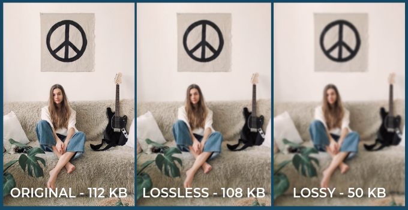

De afbeeldingen, videos en geluidsfragmenten op je telefoon nemen veel opslag in. Hierdoor zit de harde schijf van je telefoon snel vol, duurt het heel lang voordat je video, foto of geluidsfragment gedownload is en is je databundel snel leeg. Om dit probleem te vermijden, maken apparaten gebruik van compressie. Compressie zorgt ervoor dat je bestandsgrootte wordt verkleind, waardoor bijvoorbeeld je foto's minder opslag innemen. Er zijn twee verschillende soorten bestandcompressie: 'lossy compression' en 'lossless compression'.

Lossy compression
Bij lossy compression wordt bepaalde informatie van afbeeldingen of videos verwijderd, waardoor de bestandsgrootte kleiner wordt. Gelukkig merk je niet veel verschil in beeldkwaliteit, waardoor het een duidelijke foto blijft. Hieronder zie je twee afbeeldingen waar je goed het verschil tussen voor en na het toepassen van lossy compression kunt zien.
Lossless compression
Bij lossless compression wordt geen informatie verwijderd, maar het zorgt ervoor dat de inhoud van een bestand op een efficiëntere manier opgeslagen. Als meerdere pixels naast elkaar dezelfde waarde hebben, bijvoorbeeld (24,24,24,24,24), dan wordt dit opgeslagen als (5,24). Hierbij staat de 5 voor vijf keer de waarde 24.
Verschil
Zowel lossless compression als lossy compression zorgt voor het verkleinen van het bestandsgrootte, maar het blijkt dat lossless compression kleinere bestanden oplevert. Dit blijkt ook in de praktijk, als je bijvoorbeeld een foto stuurt via whatsapp, heeft de foto die de ander binnenkrijgt een lagere beeldwaliteit vergeleken met de originele foto. Daarnaast is een groot verschil dat bij lossy compression het bestand niet meer kan worden omgezet naar het origineel, maar bij lossless compression kan dit wel. Dit is omdat bij lossless compression bepaalde informatie niet wordt verwijderd, wat bij lossy compression wel het geval is. Hieronder staat een video waarin je het verschil nog eens duidelijk kunt zien.
Compressie bij geluidsfragmenten
Je hebt zojuist gelezen over hoe tekst gecomprimeerd kan worden, maar dit is ook mogelijk met geluidfragmenten! Albums in CD-kwaliteit zijn al snel rond de 700 MB, om dit te verkleinen maken ze gebruik van de lossy compression-methode. Net zoals bij beeldfragmenten, worden er stukjes informatie van het geluidsfragment verwijderd. Opnieuw heeft dit gelukkig niet veel invloed op de kwaliteit van de muziek. Mensen horen geluiden tot een bepaalde frequentie, vaak tot 20kHz. Geluiden met een hoge frequentie worden verwijderd, omdat de meeste mensen deze bijna of helemaal niet horen. Hoeveel bits er per tijdseenheid (vaak seconde) worden gebruikt, wordt de bitrate genoemd. Deze wordt berekent door eerst te bepalen met welke sample rate het geluidfragment is opgenomen, vervolgens te bepalen hoeveel bits deze sample rate opslaan, ten slotte moet je deze twee getallen vermenigvuldigen. Zo is de bitrate met een sample rate van 30.000Hz en 30 bits die dit opslaan, 30.000 x 30= 900.000bps (bits per seconde). De bitrate van een geluidfragment wordt flink teruggebracht, maar wij merken dit verschil niet.